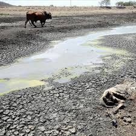
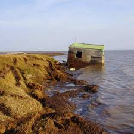
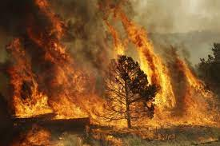

Due to the rise in global warming there have been adverse effects brought.In Southern Africa,drought will become increasingly frequent with longer and more intense heatwave
Climate change is already a measurable reality and along with other developing countries, South Africa is especially vulnerable to its impacts
South Africa is expected to become hotter and drier, leading to changes in agricultural production
and biodiversity distribution.
Causes of global warming include burning of fuel,deforestation,mining etc.This has caused the rise in sea level of coastal areas thus
causing flooding.One major problem experienced across South Africa
is dry seasons becoming longer and wet seasons starting late affecting majority of the people who are farmers.
All these beautiful seneries will be gone if do not do something about global warming.Imagine your future generations would not be able to because of your actions
Due to global warming Zambia will under go a lot of tough times.There would be a risk of its citizens facing a terrible famine and drought because of reduced rainfall.This will affect the foodchain caused by the said effect.To avert this problem the government will have to set aside millions of dollars to avert the disaster.Amother problem is that there will be increased wildfires burning the little vegetatiion left.During the short wet season high rainfall will be experienced thus possibility of causing floods
West Africa has a large number of countries.The region is divided into two parts;the Equitorial part and the Sahel region.They have not been spared from the effects of global warming nd they have had there fair share
Ghana is well known globally due to the productin of quality cocoa beans.This is on the brink of unknown times due to the effects of global warming.Due to longer droughts and short wet seasons cocoa production will fall drastically.This can however be stop if we start acting now.
Africa's most populous country and among the biggest economies in Africa is not spared either.It is among the countries that will experience the worst aftermath effects of global warming.This is because it is among the highly industrialized country's thereby a lot of greenhouse gas emission.Nigeria also has a vibrant mining sector which also contributes to greenhouse gas emissions.This has brought about some environmental problems such as drying of rivers,floding along the coast etc.The supply of food crops will also be affected adversely
North Africa is known for its beautiful sand dunes and its landscape.It is also well known for its rich cultural heritage eg the pyramids of giza and home to Sahara desert.They have also been hit hard by the effects of global warming.
Egypt long time ago was the craddle of mankind.Since long ago they have known the art of irrigation which they carry out along the banks of R.Nile.This has ensured that its citizens have food all year round.Generally Egypt is hot and dry country but of late due to global warming it has experienced snow fall which is a new thing.During the dry season it has experienced prolonged drought than usual.As a result it occasionally experiences heatwaves which at times has resulted to death of individuals.
Morocco as a result global warming has been experiencig water shortages.Its droughts have been longer than usual hence it has led to drying of food crops and vegetation therefore affecting livestock which is also key to their livelihoods